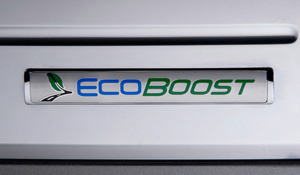

Motorul Ford EcoBoost 1.5L

Descriere generală
EcoBoost este o serie de motoare pe benzină cu turbocompresor și injecție directă, produse de Ford Motor Company și dezvoltate inițial în colaborare cu FEV Inc. (în prezent FEV North America Inc.).
Motoarele EcoBoost sunt proiectate pentru a oferi putere și cuplu comparabile cu cele
ale motoarelor aspirate natural, cu cilindre mai mare, în timp ce obțin o eficiență a consumului de combustibil
cu până la 20% mai bună și emisii de gaze cu efect de seră cu până la 15% mai reduse, conform Ford.
Producătorul consideră tehnologia EcoBoost ca fiind mai puțin costisitoare și mai versatilă decât dezvoltarea sau extinderea utilizării motoarelor hibride și diesel.
Motoarele EcoBoost sunt disponibile pe scară largă în gama de vehicule Ford.
Există două variante principale:
| Varianta motor |
Descriere |
Link |
| 3 cilindri |
Motor economic, greutate redusa |
Vezi detalii |
| 4 cilindri |
Motor mai echilibrat si mai puternic |
Vezi detalii |

Ford EcoBoost 3 cilindri
|

Ford EcoBoost 4 cilindri
|